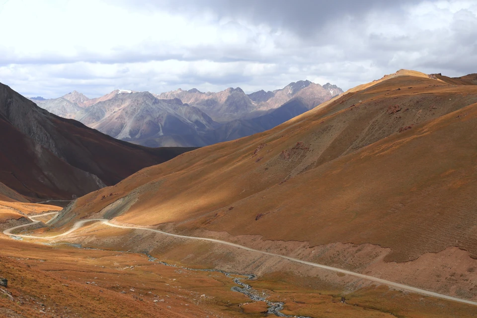
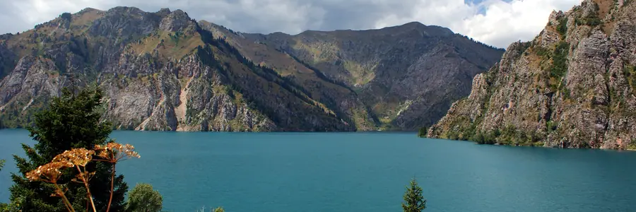
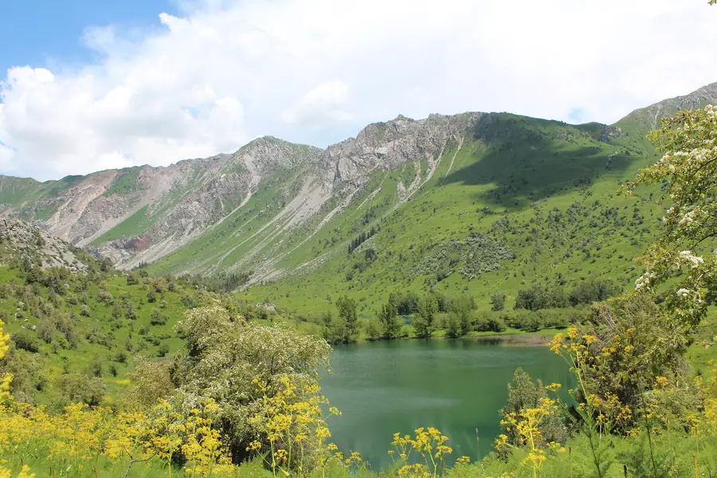
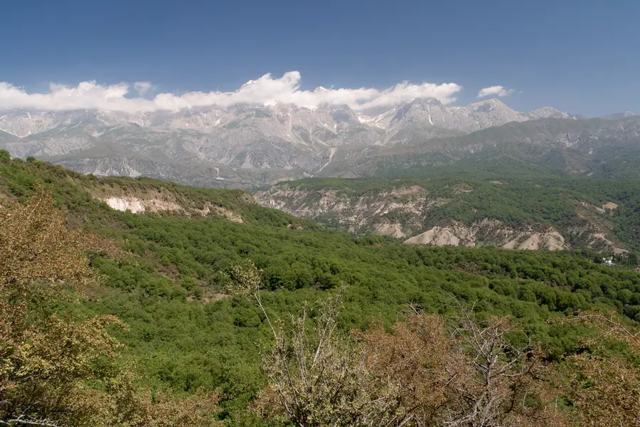
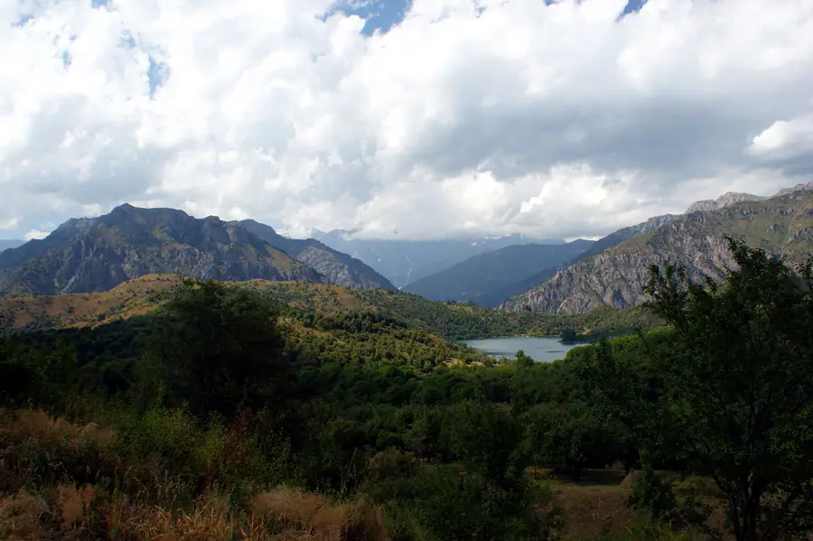

День 1
На юг по горным дорогам
Выезжаем из Бишкека и едем по перевалам к водохранилищу. Вечером — ужин и ночёвка в Токтогуле.
- Перевалы
- Водохранилище
- Ужин
НочёвкаТоктогул, гостевой дом
Шесть дней среди ореховых лесов, водопадов и бирюзового озера Сары-Челек.
Зелёный юг Кыргызстана: крупнейшие в мире естественные ореховые леса, водопады Арсланбоба и озеро Сары-Челек в заповеднике.

Бирюзовое озеро в ущелье, окружённое лесом и горами. Одно из самых красивых в стране.

Тихое озеро среди зелёных склонов в том же заповеднике.

Крупнейшие в мире естественные ореховые леса и горные водопады.
Мы не привязываем день к минутам: в горах ритм задают погода и дорога. Зато точно знаем, где вы окажетесь и что увидите.

День 1
Выезжаем из Бишкека и едем по перевалам к водохранилищу. Вечером — ужин и ночёвка в Токтогуле.
День 2
Продолжаем путь на юг и приезжаем в Арсланбоб: село среди гор и крупнейшего естественного орехового леса на планете.
День 3
Неспешная прогулка к водопадам через ореховый лес. Обед у родника, местная кухня и вечер в селе.
Прогулки лёгкие, по желанию.

День 4
Длинный переезд по зелёным долинам к Сары-Челеку. Вечером — первое знакомство с озером и тишина заповедника.
День 5
Полный день у воды и в лесу: прогулка к Аран-Кулю, виды сверху, чай у озера и неспешная фотосессия.
Заповедник: правила посещения уточняются заранее.

День 6
Прощаемся с озером и едем в Джалал-Абад. Оттуда возвращаемся в Бишкек.
Важно честно понимать, что вас ждёт: дороги, высота, условия ночёвок и погода.
Переезды
Физическая нагрузка
Высота
Комфорт
Вам подойдёт, если
Лучше выбрать другое, если
Транспорт
Два внедорожника.
Группа
От 4 до 8 путешественников.
Ночёвки
Гостевые дома в селах и заповеднике.
Заповедник
Правила посещения Сары-Челека уточняем заранее.
Точный состав услуг и стоимость мы согласуем отдельно: оставьте заявку, и мы вернёмся с программой и расчётом под вашу группу и даты.
Получить расчёт →Мы проводим этот тур в мае–июне и в сентябре–октябре. Весной всё зелёное и цветёт, осенью можно застать урожай орехов. Сроки уточняем под год.
Нет: прогулки короткие и лёгкие. Главное — готовность к долгим дорогам.
Стоимость зависит от состава группы, дат и выбранных услуг, поэтому мы не публикуем одну цифру «для всех». Оставьте заявку, и мы пришлём программу с расчётом.
Программа может меняться из-за погоды, состояния дорог и безопасности участников. В горах это нормально: мы заранее обсуждаем запасные варианты.
Да. Мы можем собрать группу под вас: друзья, семья или коллеги. Оставьте заявку и напишите в пожеланиях, сколько вас.

Восемь дней, три озера, два внедорожника

Караван-сарай, высокогорное озеро и юрты

Алай, ледники и базовый лагерь

Каньоны без толп и первые цветы

Золотой свет на высокогорных пастбищах

Снег, горячая вода и охотники с беркутом
Оставьте контакты — вернёмся с программой и расчётом под вашу группу и даты. Если пока сомневаетесь, тоже напишите: расскажем, подходит ли вам такой формат.
Что будет дальше
Мы свяжемся с вами, ответим на вопросы и пришлём программу с расчётом. Состав услуг и стоимость согласовываем отдельно.
Заявка
Оставьте контакты — вернёмся с программой и расчётом под вашу группу и даты.